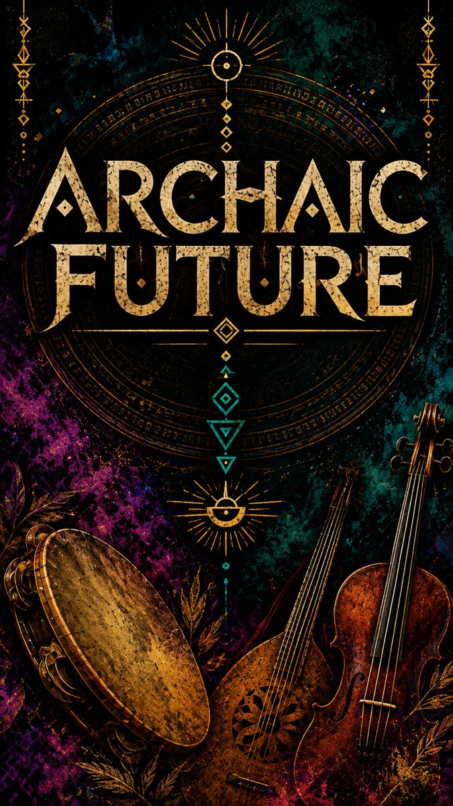
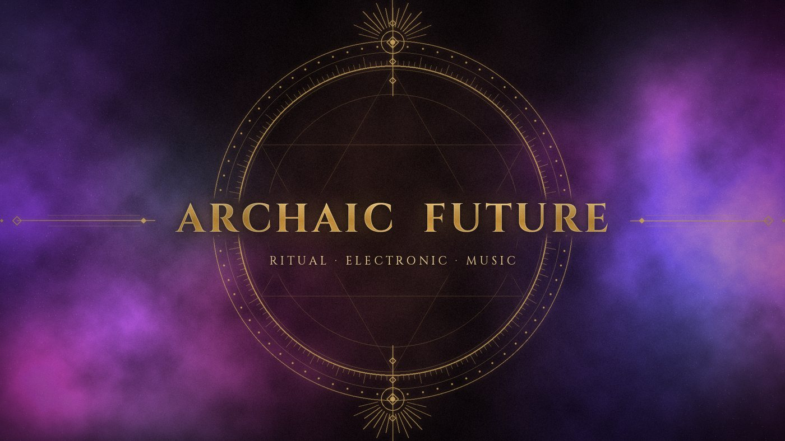

Ancestral roots meet electronic music. Frame drums, strings and diatonic accordion meet beats, bass and synthesizers in a concert that works like a ritual: the old dances become a trance you can feel in your body.Le radici antiche incontrano l'elettronica. Tamburi a cornice, corde e organetto si incontrano con beat, bassi e sintetizzatori in un concerto che funziona come un rito: le danze antiche diventano una trance che si sente nel corpo.
Davide Conte · Cristiana De Bonis · Valerio Rodelli · Giovanni Mauro
Ancestral roots · Ancient pulse · Future tribe · Archaic magicAncestral roots · Ancient pulse · Future tribe · Archaic magic

A live video, and "Quechua" recorded live at rehearsal.Un video dal vivo, e "Quechua" registrata dal vivo in sala prove.
Quechua · live rec
